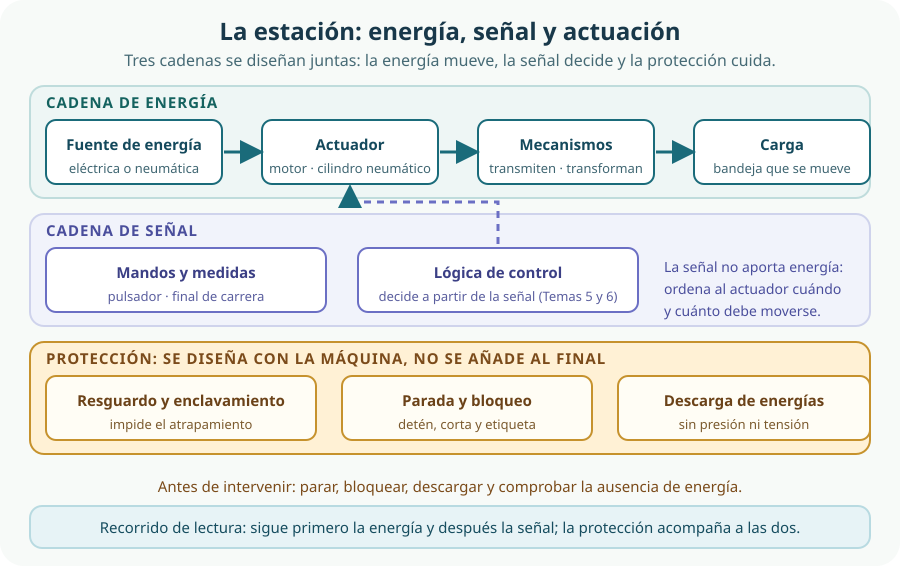

En este bloque hemos aprendido a montar y medir circuitos eléctricos y electrónicos (Tema 5), a diseñar funciones lógicas sencillas (Tema 6) y a mover cosas con aire comprimido (Tema 7). Ahora cerramos el bloque con lo que faltaba: los mecanismos que llevan el movimiento del motor hasta la pieza y la estructura que lo sostiene. El resultado será una estación automática y segura de clasificación y señalización para el organizador modular del aula-taller: una máquina capaz de separar piezas y avisar de lo que ocurre, integrando electricidad, electrónica, neumática y mecánica.
- describir el tipo de movimiento de una máquina y las fuerzas que intervienen, con sus magnitudes y unidades;
- reconocer los mecanismos de transmisión (poleas y correas, engranajes, cadenas y ruedas dentadas) y elegir el más adecuado en cada situación;
- definir y aplicar la relación de transmisión para calcular velocidad, par y sentido de giro;
- explicar los mecanismos de transformación (biela-manivela, piñón-cremallera y levas) y sus aplicaciones reales;
- seleccionar uniones, guiados y soportes coherentes con la estructura de una máquina sencilla;
- interpretar esquemas de conjuntos mecánicos y de circuitos eléctricos y neumáticos elementales;
- integrar actuadores eléctricos y neumáticos en una estación, montarla por etapas y verificarla, de forma física o simulada, con seguridad.
1. Movimiento y fuerza: qué hace que una máquina se mueva
Una máquina es un conjunto de piezas que aprovecha una energía para producir un movimiento útil. Antes de elegir cualquier mecanismo hay que responder a tres preguntas: qué movimiento queremos, qué fuerza debe vencerse y a qué velocidad debe ocurrir. Solo entonces tiene sentido escoger piezas.
Tipos de movimiento
- Rotativo o de giro. Las piezas giran alrededor de un eje sin desplazarse. Es el movimiento típico de un motor, de una rueda o de un engranaje.
- Lineal o de traslación. Las piezas se desplazan en línea recta: un carro sobre una guía, un cilindro que empuja, una bandeja que entra en su hueco.
- Alternativo o de vaivén. El movimiento cambia de sentido una y otra vez: el émbolo de una bomba, la hoja de una sierra o una compuerta que se abre y se cierra.
- Continuo o intermitente. Puede avanzar sin interrupción o a saltos regulares, como el giro paso a paso de algunos motores.
Tres magnitudes que conviene no confundir
La fuerza expresa la intensidad de un empuje o de una tracción y se mide en newtons (N). En las máquinas giratorias interesa sobre todo el par o momento, que es la capacidad de una fuerza para hacer girar algo: se calcula multiplicando la fuerza por su distancia al eje, M = F · d, y se mide en newtons·metro (N·m). Una misma fuerza hace girar mucho mejor un eje si se aplica lejos del centro.
La velocidad de giro se expresa en revoluciones por minuto (rpm) y la velocidad lineal en metros por segundo (m/s). Un motor puede girar muy deprisa pero con poco par; un mecanismo bien elegido permite cambiar ese reparto.
| Magnitud | Qué describe | Unidad habitual | Dónde aparece en la estación |
|---|---|---|---|
| Fuerza | Empuje o tracción que se aplica sobre un cuerpo. | newton (N) | Empuje del cilindro sobre la compuerta o la bandeja. |
| Par o momento | Efecto giratorio de una fuerza respecto a un eje. | newton·metro (N·m) | Giro del eje del motor que arrastra la cinta o el disco. |
| Velocidad de giro | Vueltas que da un eje en una unidad de tiempo. | revoluciones por minuto (rpm) | Giro del motor y de la rueda dentada de salida. |
| Velocidad lineal | Distancia recorrida por unidad de tiempo. | metro por segundo (m/s) | Avanza la bandeja o la cinta de clasificación. |
| Potencia | Energía que se transforma por unidad de tiempo. | vatio (W) | Motor eléctrico o cilindro que mueven la estación. |
| Rozamiento | Fuerza que se opone al movimiento entre superficies en contacto. | newton (N) y pérdidas en vatios | Guías, cojinetes, correas y engranajes que se calientan. |
El rozamiento es la razón por la que ninguna máquina real es perfecta: parte de la energía se convierte en calor y no se recupera. Por eso hay que lubricar, alinear y elegir bien los apoyos. Un mecanismo no crea energía: reparte la que recibe, cambiando velocidad, fuerza y sentido.
2. Transmitir el movimiento: poleas, engranajes y cadenas
Los mecanismos de transmisión reciben un movimiento y devuelven el mismo tipo de movimiento, normalmente girando también, pero cambiado de velocidad, de par o de posición. Su misión es llevar el giro del motor hasta un eje que está lejos o que no está alineado con él.
Poleas y correa
Dos poleas unidas por una correa transmiten el giro entre ejes separados y paralelos. La correa se apoya en las gargantas de las poleas y, si está bien tensada, apenas resbala. Entre sus ventajas están el bajo ruido, que admite mucha distancia entre ejes y que puede deslizar ante una sobrecarga, protegiendo al motor.[7] Como inconvenientes, ocupa espacio, puede patinar —entonces no se cumple la velocidad prevista— y necesita tensión y sustitución periódica.
Engranajes
Los engranajes son ruedas dentadas que encajan directamente entre sí. Al engranar diente con diente no hay deslizamiento: la transmisión es muy exacta y permite reducir mucho el tamaño para lograr pares elevados. Se emplean cuando se necesita precisión, pero exigen que ambas ruedas tengan el mismo módulo (el tamaño del diente), lubricación y una alineación cuidadosa.[6] Pueden transmitir entre ejes paralelos, perpendiculares o incluso cruzados, según el tipo de rueda.
Cadenas y ruedas dentadas
Una cadena de rodillos une dos ruedas dentadas y combina ventajas: transmite sin patinar y permite separar los ejes más que un engranaje, porque no hay contacto directo entre ruedas. Se usa en bicicletas, motores y máquinas que necesitan transmitir bastante fuerza con seguridad.[8] Requiere lubricación, alineación y tensión correcta, y hace más ruido que una correa.
| Mecanismo | Cómo transmite | Ventajas | Límites | En la estación |
|---|---|---|---|---|
| Poleas y correa | Una correa apoyada en las gargantas de dos poleas. | Silenciosa; admite ejes alejados; puede resbalar ante sobrecargas. | Puede patinar; necesita tensión y sustitución. | Mover el eje de la cinta de clasificación desde el motor. |
| Engranajes | Ruedas dentadas en contacto directo. | Muy precisa; gran reducción de tamaño; pares altos. | Necesita el mismo módulo, lubricación y alineación; ruido. | Reducir las vueltas del motor para accionar el disco clasificador. |
| Cadena y ruedas dentadas | Cadena de eslabones que engrana en ruedas dentadas. | Sin patinaje; admite distancia entre ejes; robusta. | Ruido; necesita lubricación y tensión; algo pesada. | Accionar el eje que empuja la bandeja hacia su compartimento. |
3. La relación de transmisión: velocidad, par y sentido
Para saber cómo cambia el movimiento de un eje a otro usamos la relación de transmisión. Antes de escribir ninguna fórmula hay que definirla con claridad, porque es la causa de muchos errores:
Cómo se calcula con cada mecanismo
- Engranajes o ruedas dentadas que engranan entre sí o unidos por cadena: cada diente de la rueda motriz empuja a un diente de la conducida, de modo que i = zentrada / zsalida, donde z es el número de dientes de cada rueda. Ambas ruedas deben compartir módulo (o paso, en el caso de las cadenas).
- Poleas unidas por correa: la correa recorre la misma longitud en cada punto, así que cuanto mayor sea la polea, más despacio gira. Entonces i = dentrada / dsalida, donde d es el diámetro de la polea.
- Varias etapas: la relación total es el producto de las relaciones de cada etapa. Una rueda intermedia no cambia la relación total, pero sí el sentido del giro.
Qué ocurre con el par y con el sentido
En un mecanismo ideal la potencia se conserva, y como P = M · n (par por velocidad), reducir la velocidad multiplica el par en la misma proporción: si i es 1/3, el par de salida es aproximadamente el triple del de entrada. En un multiplicador ocurre lo contrario: se gana velocidad y se pierde par. En la práctica, el rozamiento y el posible deslizamiento hacen que la potencia útil sea menor que la teórica.
El sentido de giro depende del montaje: dos engranajes exteriores giran en sentidos contrarios; una correa abierta o una cadena transmiten el giro en el mismo sentido; una correa cruzada lo invierte.
| Se necesita… | Conviene | Relación | Ejemplo en el proyecto |
|---|---|---|---|
| Mover algo pesado despacio | Reductor | i menor que 1 | Disco clasificador que gira lentamente con fuerza. |
| Que un eje gire rápido con poca carga | Multiplicador | i mayor que 1 | Ventilador de refrigeración o disco que señaliza. |
| Que dos ejes giren igual pero separados | Correa con poleas iguales | i igual a 1 | Eje de la cinta arrastrado desde el motor. |
| Invertir el sentido de giro | Correa cruzada | i según los diámetros | Ajuste de la dirección de avance de una banda. |
4. Transformar el movimiento: biela-manivela, piñón-cremallera y levas
Los mecanismos de transformación cambian el tipo de movimiento: convierten un giro en un desplazamiento recto o un desplazamiento recto en un giro. Son los que permiten que un motor giratorio abra una compuerta, empuje una bandeja o haga subir y bajar un pulsador.[10]
Biela-manivela
La manivela es una pieza que gira y lleva un punto separado del eje; la biela une ese punto con un elemento que solo puede desplazarse en línea recta. El resultado es un movimiento alternativo de vaivén, cuya carrera es aproximadamente el doble de la distancia entre el punto de la manivela y el eje. Se usa en bombas, sierras alternativas y motores de combustión, y también en sentido contrario: si empujamos la biela, conseguimos girar la manivela.
Piñón-cremallera
Una cremallera es una barra dentada recta; un piñón es la rueda dentada que engrana con ella. Es el mecanismo que convierte el giro en desplazamiento recto continuo (o al revés). Aparece en las puertas correderas, en los pórticos de fresado y en la dirección de los vehículos. Cada vuelta completa del piñón desplaza la cremallera una longitud igual al perímetro de la circunferencia del piñón.
Levas
Una leva es un disco o una pieza giratoria con un perfil especial que empuja a un seguidor. Al girar, el perfil va levantando y soltando el seguidor, que realiza un movimiento alternativo cuyo recorrido y ritmo dependen de la forma de la leva. Un muelle mantiene el seguidor en contacto. Su ventaja es que el movimiento se "programa" con la forma de la pieza, sin necesidad de electrónica; se emplea en válvulas, máquinas de coser y juguetes mecánicos.
| Mecanismo | Entrada → salida | Característica | En la estación |
|---|---|---|---|
| Biela-manivela | Giro → vaivén recto | La carrera depende del radio de la manivela; funciona también al revés. | Abrir y cerrar la compuerta que deja caer una pieza. |
| Piñón-cremallera | Giro ↔ desplazamiento recto continuo | Cada vuelta avanza un perímetro del piñón; permite recorridos largos. | Empujar la bandeja hacia el compartimento correcto. |
| Leva | Giro → vaivén recto | El perfil determina el movimiento; necesita muelle de retorno. | Accionar el pulsador de aviso que señaliza cada pieza. |
5. Unir, guiar y soportar: la estructura de la máquina
Los mecanismos no funcionan en el aire. Necesitan unirse entre sí, desplazarse guiados en la dirección correcta y estar sostenidos por una estructura que resista sin deformarse. Esta parte de la máquina es tan importante como el motor: una unión floja o una guía mal alineada arruinan el movimiento mejor calculado.
Elementos de unión
- Uniones fijas: no se pueden desmontar sin destruirlas. Ejemplos: soldadura, remache o adhesivo.
- Uniones desmontables: permiten separar las piezas sin dañarlas. Ejemplos: tornillo con tuerca y arandela, pasador, chaveta o abrazadera.
- Uniones móviles: dejan que las piezas giren o se deslicen entre sí. Ejemplos: pernos, bisagras y articulaciones.
Guiado y soporte
El guiado mantiene cada pieza en su trayectoria: ejes y árboles, casquillos, rodamientos, guías lineales y rieles. Un rodamiento reduce el rozamiento y facilita el giro; una guía lineal impide que el carro se desvíe. El soporte —bancada, bastidor, escuadras y placas— sostiene todo el conjunto y absorbe las fuerzas y las vibraciones. La alineación y la holgura deben ajustarse: si faltan, la pieza se agarrota; si sobran, la máquina vibra y se desgasta.
| Función | Elementos típicos | Qué resuelve | Error frecuente |
|---|---|---|---|
| Unir | Tornillo, tuerca, arandela, remache, bisagra. | Mantener unidas las piezas con la rigidez o la movilidad necesarias. | Olvidar la arandela y soltar la tuerca con la vibración. |
| Guiar | Eje, casquillo, rodamiento, guía lineal. | Conducir el movimiento en la dirección correcta con poco rozamiento. | Montar el eje desalineado y forzar el mecanismo. |
| Soportar | Bancada, bastidor, escuadra, placa de base. | Resistir fuerzas y vibraciones sin deformarse ni volcar. | Una base ligera que se mueve al arrancar el motor. |
6. Leer esquemas de conjuntos y de circuitos
Antes de montar, hay que saber leer. Un esquema no es un dibujo artístico: es un documento que dice, con símbolos acordados, cómo está hecho un conjunto y cómo circula la energía o la señal. Conviene distinguir tres tipos que se usan juntos en el proyecto.
| Tipo de esquema | Qué muestra | Pregunta que responde |
|---|---|---|
| Esquema de conjunto | Las piezas en su posición real, con numeración y lista de piezas. | ¿Cómo se monta y en qué orden? |
| Despiece o vista explotada | Las piezas separadas siguiendo el orden de montaje. | ¿Qué piezas forman el mecanismo y cómo encajan? |
| Esquema de circuito | Los símbolos normalizados y las conexiones entre ellos. | ¿Por dónde va la energía y por dónde va la señal? |
La simbología es un lenguaje compartido. En electricidad y electrónica ya has visto resistencias, diodos, LED, motores y pulsadores (Tema 5); en lógica digital, las puertas AND, OR y NOT (Tema 6); y en neumática, compresor, válvulas, cilindros y reguladores (Tema 7). Los símbolos de los circuitos neumáticos siguen reglas internacionales de representación gráfica, de modo que un esquema se interpreta igual en cualquier taller.[9]
Un orden que siempre funciona
- Sitúa la fuente. Localiza de dónde sale la energía: la red eléctrica o el aire comprimido.
- Sigue la cadena de energía elemento a elemento hasta la carga que se mueve.
- Busca la cadena de señal por separado: mandos, sensores y lógica que ordenan el movimiento.
- Identifica cada símbolo por su función —qué hace— antes que por su forma.
- Comprueba las uniones y las referencias: cada pieza del esquema debe tener su número y su lugar en la lista.
7. Actuadores eléctricos y neumáticos: energía, señal y actuación
El actuador es el elemento que convierte la energía en movimiento. En nuestra estación conviven dos familias, porque cada una tiene sus ventajas: los actuadores eléctricos, que ya conoces de los temas anteriores, y los actuadores neumáticos, que aprovechan el aire comprimido.
Actuadores eléctricos
- Motor de corriente continua: gira en un sentido u otro según la polaridad y cambia de velocidad con la tensión. Es sencillo y económico, pero no garantiza una posición exacta.
- Motor paso a paso: avanza en giros pequeños y contables, por lo que permite posicionar con precisión sin apenas sensores. Lo encontramos en impresoras y en mecanismos de avance.
- Servomotor: incorpora un sensor de posición y un circuito de control, de modo que mantiene el ángulo que se le ordena. Es la opción cuando hace falta precisión real.
- Electroimán y solenoide: producen un movimiento recto corto al circular corriente por una bobina; se usan para empujar pestillos o abrir pequeñas compuertas.
La corriente que necesita un motor es mucho mayor que la que puede entregar la salida de un circuito lógico. Para gobernarlo se intercala un elemento de control de potencia: un relé, un transistor o un puente en H. Ese es el punto donde la señal —pequeña— se convierte en energía —grande—.
Actuadores neumáticos
Un cilindro convierte la presión del aire en un movimiento recto. El de simple efecto empuja con el aire y vuelve con un muelle; el de doble efecto empuja y retrocede con aire, y por eso permite controlar los dos sentidos. Una electroválvula decide hacia dónde entra el aire, y un regulador de caudal ajusta la velocidad del vástago. La neumática ofrece fuerza, sencillez y buen comportamiento en entornos sucios, pero necesita un compresor y una preparación del aire, hace ruido y no permite detener el vástago con precisión en cualquier posición.

Tres cadenas que no hay que mezclar
La cadena de energía transporta la potencia que mueve la máquina: fuente, control de potencia, actuador, mecanismos y carga. La cadena de señal transporta información: pulsadores, finales de carrera y sensores envían datos a la lógica, que ordena al actuador cuándo moverse y hacia dónde. Una y otra se representan con símbolos distintos y conviene dibujarlas por separado, aunque físicamente estén unidas.
Programar un controlador para que decida por sí mismo llegará más adelante, cuando trabajemos los sistemas de control. En este tema la lógica es sencilla y visible: combinaciones de mandos y sensores que se pueden representar con los componentes que ya conocemos.
8. Integrar, montar y verificar la estación con seguridad
El proyecto común del bloque llega ahora a su punto final: una estación automática y segura de clasificación y señalización para el organizador del aula-taller. La estación recoge componentes, los separa según un criterio sencillo y señaliza lo que ocurre con luces o avisos. En ella se integran la alimentación y la electrónica del Tema 5, una decisión lógica del Tema 6, un cilindro y una electroválvula del Tema 7 y los mecanismos, las uniones y la estructura de este tema.
Integrar es decidir en orden
Qué piezas se clasifican, con qué criterio, qué recorrido hacen y cómo se avisa. Igual que en el Tema 3, cada requisito debe poder comprobarse.
Motor eléctrico para el movimiento continuo; cilindro neumático para empujar con fuerza; electroimán o leva para un aviso corto.
Fijar la relación de transmisión para que la salida tenga la velocidad y el par necesarios, y decidir el sentido de giro.
Escoger transmisión o transformación, definir uniones, guías y soportes, y comprobar que todo está alineado y accesible.
Esquema de conjunto para el montaje y esquema de circuito para la energía y la señal.
Primero a mano, después con energía y sin carga, y por último el conjunto completo, midiendo y registrando.
Seguridad: resguardos, energías y parada
Una máquina que se mueve sola puede atrapar, golpear o arrastrar. La protección no se añade al final: se diseña desde el primer boceto. Los resguardos son barreras físicas que impiden el acceso a las partes móviles, y su enclavamiento garantiza que la máquina no arranque mientras el resguardo esté abierto.[2] Si la máquina no se puede proteger por completo, se combinan resguardos, distancia de seguridad, señalización y procedimientos de trabajo.[1] Estos principios forman parte de las normas generales de diseño seguro de máquinas.[5]
En la estación conviven tres energías que hay que conocer y controlar: la eléctrica de la alimentación y del motor, la neumática del aire comprimido y la mecánica de las piezas en movimiento, los muelles y las masas que pueden caer o seguir girando. Todas deben quedar inutilizadas antes de intervenir.
| Peligro | Origen | Medida prioritaria | Comprobación |
|---|---|---|---|
| Atrapamiento entre piezas | Engranajes, cadena y correa en movimiento. | Resguardo fijo o con enclavamiento que impida el acceso. | Con la máquina parada, verificar que no se alcanza la zona; con la máquina en marcha, comprobar que el resguardo detiene el arranque al abrirse. |
| Golpe o arrastre | Biela, leva, cremallera y vástago del cilindro. | Cubrir las partes móviles y limitar el recorrido. | Medir el recorrido máximo y comprobar que no invade la zona de la mano. |
| Contacto eléctrico | Alimentación, cableado y control de potencia. | Cortar, bloquear y comprobar la ausencia de tensión antes de intervenir. | Verificar con el instrumento adecuado que no hay tensión.[4] |
| Proyección de aire o pieza | Circuito neumático con presión y piezas mal sujetas. | Despresurizar el circuito antes de abrir; sujetar bien las piezas. | Comprobar en el manómetro que la presión ha caído a cero. |
| Energía mecánica almacenada | Muelles comprimidos, masas elevadas y ejes que siguen girando por inercia. | Descargar muelles con útiles y esperar a que el movimiento cese. | Comprobar que el eje está totalmente detenido antes de acercarse. |
Antes de tocar cualquier elemento se realiza el bloqueo y descarga de la máquina: se corta la energía, se bloquea el interruptor con un candado o un dispositivo equivalente, se coloca una etiqueta que identifica a quien interviene y se despresuriza el circuito neumático. Solo entonces se comprueba que la energía ha desaparecido de verdad.[3]
Verificar: física o simulada
Verificar es comparar lo que ocurre con lo que se había previsto, y registrar el resultado. En algunos casos la prueba será física, con la máquina montada; en otros bastará una simulación, como hicimos con los circuitos lógicos del Tema 6, para comprobar antes de construir.
| Qué se comprueba | Cómo | Criterio de aceptación |
|---|---|---|
| Velocidad de salida | Medida de rpm con el instrumento adecuado o cálculo a partir de la relación. | Coincide con el valor previsto dentro del margen aceptado. |
| Recorrido y alcance | Medición con regla o tope, sin acercar las manos a las partes móviles. | Alcanza la posición necesaria sin invadir zonas prohibidas. |
| Fuerza o empuje | Prueba con carga representativa, supervisada y con incremento controlado. | Mueve la carga sin deformarse ni detenerse. |
| Protección y parada | Se abre el resguardo y se pulsa la parada con la máquina en marcha. | El movimiento se detiene y no vuelve a arrancar solo. |
| Señalización | Se acciona cada mando y se observa si el aviso corresponde. | Cada luz o aviso indica el estado real de la estación. |
Comprueba lo aprendido
Tu trabajo estará bien resuelto si puedes explicar cada decisión y mostrar qué comprobaste. Responde a estas preguntas y revisa después la tabla de evidencias.
- Un motor gira a 900 rpm y arrastra por correa una polea cuyo diámetro es el triple que el de la polea motriz. ¿Cuál es la relación de transmisión? ¿El eje de salida gira más deprisa o más despacio? ¿Y qué ocurre con el par?
- ¿Qué mecanismo elegirías para convertir el giro del motor en un vaivén de la compuerta? ¿Y para desplazar la bandeja en línea recta un recorrido largo?
- Explica por qué una correa puede patinar y una cadena no, y razona en qué situación conviene cada comportamiento.
- ¿Por qué conviene probar el mecanismo a mano y sin energía antes de conectarlo al motor?
- Antes de intervenir en la estación, ¿qué tres acciones de seguridad hay que realizar y qué se comprueba después?
- ¿Qué diferencia hay entre la cadena de energía y la cadena de señal? Pon un ejemplo de cada una en la estación.
| Aspecto | Qué debes demostrar | Evidencias posibles |
|---|---|---|
| Comprender el movimiento | Reconocer qué movimiento se necesita y por qué el mecanismo elegido lo consigue. | Bocetos, tipo de movimiento identificado y justificación del mecanismo. |
| Calcular la transmisión | Aplicar la relación de transmisión para obtener velocidad, par y sentido. | Cálculos escritos con sus unidades y comparación con la medida real. |
| Integrar elementos | Combinar mecánica, electricidad, electrónica y neumática en un conjunto coherente. | Esquema de conjunto, esquema de circuito y lista de piezas. |
| Trabajar con seguridad | Explicar los peligros, las medidas tomadas y el procedimiento de bloqueo y descarga. | Tabla de peligros y controles, y registro del montaje por etapas. |
| Verificar | Comprobar el funcionamiento, física o simuladamente, y registrar el resultado. | Tabla de pruebas con valores medidos, criterio y decisión de mejora. |
Antes de entregar, pide a alguien ajeno al equipo que intente mover una pieza con la estación parada y que explique qué hace cada elemento. Si no puede, probablemente falte claridad en los esquemas o en la señalización.
Glosario del tema
- Actuador
- Elemento que transforma una energía —eléctrica o neumática— en movimiento útil.
- Árbol (eje)
- Pieza cilíndrica que gira y sostiene a otras piezas, como ruedas o poleas.
- Biela-manivela
- Mecanismo que convierte un movimiento de giro en un movimiento alternativo de vaivén, y viceversa.
- Bloqueo y descarga
- Conjunto de acciones para cortar, bloquear y etiquetar las energías antes de intervenir en una máquina.
- Cadena de rodillos
- Cadena articulada por eslabones que engrana en ruedas dentadas y transmite el movimiento sin patinar.
- Correa
- Elemento flexible que transmite el giro entre poleas separadas y puede deslizar ante una sobrecarga.
- Cremallera
- Barra dentada recta que, engranada con un piñón, transforma el giro en desplazamiento recto.
- Electroválvula
- Válvula accionada eléctricamente que dirige el aire comprimido hacia el actuador neumático.
- Engranaje
- Rueda dentada que transmite el movimiento por contacto directo con otra rueda dentada.
- Guiado
- Conjunto de elementos que mantienen una pieza en su trayectoria y reducen el rozamiento.
- Leva
- Pieza giratoria con un perfil que empuja a un seguidor y produce un movimiento determinado por su forma.
- Momento (par)
- Efecto giratorio de una fuerza respecto a un eje; se mide en newtons·metro (N·m).
- Piñón
- Rueda dentada pequeña, generalmente la que va montada en el eje motor.
- Polea
- Rueda acanalada que guía una correa o cable para transmitir el movimiento.
- Relación de transmisión
- Cociente entre la velocidad del eje de salida y la del eje de entrada (i = nsalida / nentrada).
- Resguardo
- Barrera física, fija o con enclavamiento, que impide acceder a las partes móviles de una máquina.
- Rodamiento
- Elemento que facilita el giro de un eje reduciendo el rozamiento y guiando su posición.
- Transmisión y transformación
- La transmisión conserva el tipo de movimiento y la transformación lo cambia de rotativo a lineal o alternativo.
- Verificación
- Comprobación mediante evidencias de que el resultado cumple lo previsto, de forma física o simulada.
Resumen esencial
- Una máquina convierte una energía en un movimiento útil: antes de elegir piezas hay que definir qué movimiento, qué fuerza y qué velocidad se necesitan.
- La fuerza se mide en newtons y el par en newtons·metro; el par depende de la fuerza y de su distancia al eje.
- Los mecanismos de transmisión conservan el tipo de movimiento: poleas y correa, engranajes y cadenas con ruedas dentadas.
- La correa admite distancia y puede patinar; el engranaje es preciso y compacto; la cadena no patina y salva distancias.
- La relación de transmisión es i = nsalida / nentrada. Si i es menor que 1 hay reducción: menos velocidad y más par.
- Con engranajes o ruedas dentadas, i = zentrada / zsalida; con poleas y correa, i = dentrada / dsalida.
- El sentido de giro depende del montaje: los engranajes exteriores lo invierten; la correa abierta y la cadena lo mantienen.
- Los mecanismos de transformación cambian el tipo de movimiento: biela-manivela y levas producen vaivén; el piñón-cremallera, desplazamiento recto continuo.
- Uniones, guiados, soportes y estructura sostienen la máquina; la alineación y la holgura correctas evitan agarrotamientos y vibraciones.
- El actuador convierte la energía en movimiento. La señal no aporta energía: ordena al actuador cuándo moverse.
- La seguridad se diseña con la máquina: resguardo y enclavamiento, parada, bloqueo y descarga de las energías eléctrica, neumática y mecánica.
- El montaje se hace por etapas —a mano, a baja velocidad, sin carga y por último el conjunto— y se verifica física o simuladamente, registrando los resultados.
Fuentes y recursos fiables
- [1] INSST — Guía técnica para la evaluación y prevención de los riesgos relativos a la utilización de los equipos de trabajo (PDF).
- [2] INSST — NTP 1220: Dispositivos de enclavamiento con bloqueo del resguardo.
- [3] INSST — NTP 1117: Consignación de máquinas.
- [4] INSST — Riesgo eléctrico: las cinco reglas de oro.
- [5] AENOR — UNE-EN ISO 12100:2012: seguridad de las máquinas, principios generales de diseño y evaluación del riesgo (resumen; norma completa de pago).
- [6] Boston Gear — Gearology: fundamentos de engranajes y relaciones de transmisión (PDF) (en inglés).
- [7] Optibelt — Manual técnico de correas trapeciales: poleas, correas y relación de velocidades (PDF).
- [8] Tsubaki — The Complete Guide to Chain (PDF) (en inglés).
- [9] SMC — Símbolos neumáticos: simbología normalizada para leer esquemas.
- [10] Universidad de Cantabria — OpenCourseWare: Máquinas y Mecanismos.